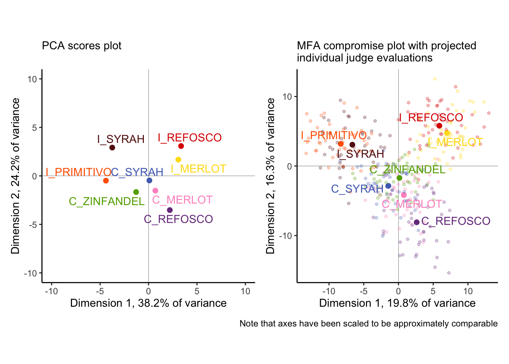
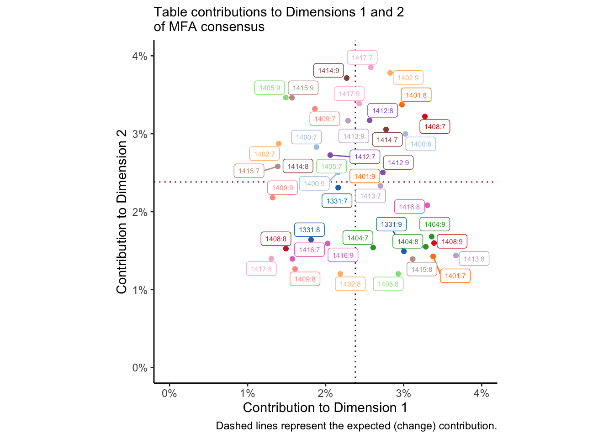
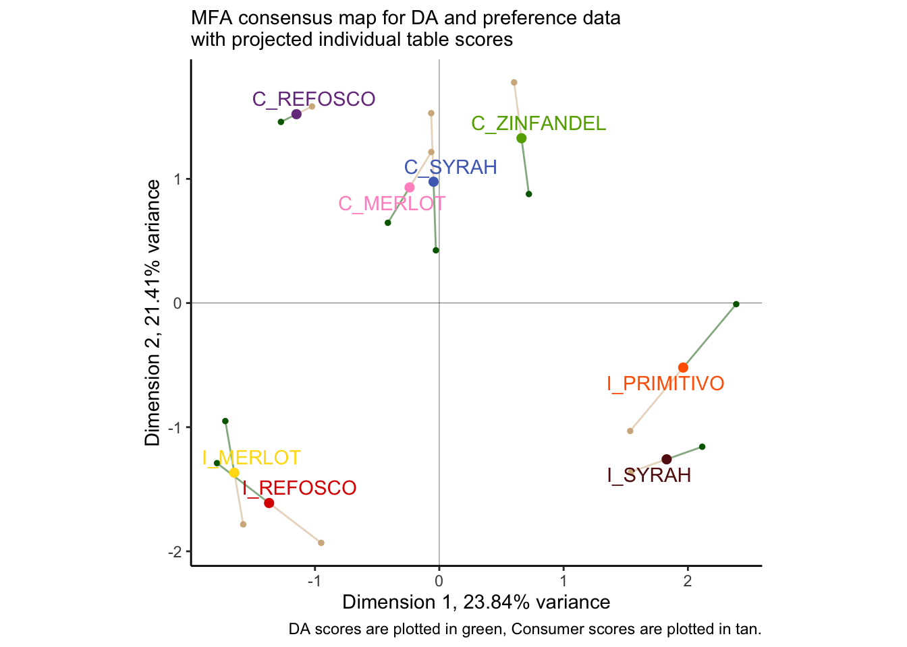

Chapter 12 Multiple Factor(ial) Analysis (MFA)
Multiple Factor Analysis (MFA: sometimes called Multiple Factorial Analysis, to distinguish from the “Factor Analysis” approaches related to Exploratory and Confirmatory Factor Analysis, see Rencher 2002) is a surprisingly straightforward extension to PCA that allows the comparison of multiple sets of data collected on the same observations. It is therefore suitable for use on the same sorts of data as PLS and other multi-table approaches. Unlike those approaches, however, MFA is (in its basic forms) a purely exploratory data analysis (in the same was as PCA is!)–PLS-R, by contrast, is inferential, claiming that the \(\mathbf{Y}\) matrix can be explained by the variables in the \(\mathbf{X}\) matrix.
The basic idea of MFA is very simple: given multiple sets of measurements (sets of columns or variables) collected on the same observations (rows), each set can be “normalized” by its first singular value so that all the sets are “commensurate” for a PCA. To put it another way, MFA consists of a sequence of PCAs: first each set of measurements is analyzed by PCA (really, Singular Value Decompositon) to extract its first singular value; then each element of each set of measurements is divided by its respective singular value; finally, the normalized tables are (row-wise) concatenated into a single table, which is then analyzed by a second PCA (SVD). A more complete and detailed explanation is given in Hervé Abdi, Williams, and Valentin (2013).
In comparison to standard PCA, MFA has several advantages. The primary advantage is that it is possible not only to assess the role of rows (observations or samples) and columns (variables or measurements), but also tables themselves. This allows us to get insight into the agreement and disagreement between different sets of measurements: in sensory evaluation, this is particularly helpful when we have multiple (untrained?) subjects, or subjects using different sets of descriptors to assess products.
In the original R Opus, HGH analyzed the DA and the consumer data for the wines by MFA. We will follow this, but we will start by first analyzing only the DA data by MFA in order to gain a feel for the methodology (and to avoid boredom with results that will be quite similar to the results from our Preference Mapping section). We will use FactoMineR for the MFA() function.
library(tidyverse)
library(here)
library(FactoMineR)
library(paletteer)
# This is all just standard set up
descriptive_data <-
read_csv(here("data/torriDAFinal.csv")) %>%
mutate(across(1:3, ~as.factor(.)))
consumer_data <- read_csv(here("data/torriconsFinal.csv"))
consumer_demo <-
consumer_data %>%
select(Judge:Age) %>%
mutate(across(Judge:Age, ~as.factor(.)))
consumer_data <-
consumer_data %>%
select(-(`Wine Frequency`:Age)) %>%
mutate(Judge = as.factor(Judge))12.1 MFA vs PCA
Typically, we have been conducting PCA on a matrix of mean values for each wine and descriptor: we have averaged across judge and across replication. But we can instead treat these as individual data tables to be analyzed by MFA. Let’s contrast the results.
descriptive_pca <-
descriptive_data %>%
group_by(ProductName) %>%
summarize(across(where(is.numeric), ~mean(.))) %>%
column_to_rownames("ProductName") %>%
# Because MFA typically scales all columns to unit variance, we will do so as
# well
PCA(scale.unit = TRUE, graph = FALSE)
descriptive_very_wide_data <-
descriptive_data %>%
pivot_longer(-c(NJ, ProductName, NR)) %>%
pivot_wider(names_from = c(name, NJ, NR),
values_from = value,
names_vary = "fastest",
names_sep = ".")
glimpse(descriptive_very_wide_data)## Rows: 8
## Columns: 841
## $ ProductName <fct> C_MERLOT, C_SYRAH, C_ZINFANDEL, C_REFOSCO, I_ME…
## $ Red_berry.1331.7 <dbl> 5.1, 5.6, 4.9, 5.0, 3.3, 5.7, 2.9, 3.2
## $ Dark_berry.1331.7 <dbl> 5.8, 1.9, 2.6, 1.9, 7.2, 3.6, 5.1, 6.0
## $ Jam.1331.7 <dbl> 2.1, 3.9, 1.4, 7.8, 0.5, 8.7, 8.7, 4.0
## $ Dried_fruit.1331.7 <dbl> 4.7, 1.2, 5.9, 0.6, 5.8, 1.9, 0.4, 0.7
## $ Artificial_frui.1331.7 <dbl> 1.0, 7.9, 0.8, 6.6, 0.7, 7.4, 6.2, 4.1
## $ Chocolate.1331.7 <dbl> 2.9, 1.0, 2.0, 6.4, 2.1, 3.3, 3.4, 3.6
## $ Vanilla.1331.7 <dbl> 5.0, 8.3, 2.7, 5.5, 1.3, 6.9, 8.1, 4.8
....We have made an extremely wide data frame with a set of 20 columns for each unique combination of NR (rep) and NJ (judge). We can now use that information to create an MFA that will give a best compromise among all these measurements.
descriptive_mfa <- descriptive_very_wide_data %>%
column_to_rownames("ProductName") %>%
# `group = ` specifies the sets of measurements by length. We have 42 tables
# of 20 descriptors.
MFA(group = rep(20, times = 42), graph = FALSE)
descriptive_mfa## **Results of the Multiple Factor Analysis (MFA)**
## The analysis was performed on 8 individuals, described by 840 variables
## *Results are available in the following objects :
##
## name description
## 1 "$eig" "eigenvalues"
## 2 "$separate.analyses" "separate analyses for each group of variables"
## 3 "$group" "results for all the groups"
## 4 "$partial.axes" "results for the partial axes"
## 5 "$inertia.ratio" "inertia ratio"
## 6 "$ind" "results for the individuals"
## 7 "$quanti.var" "results for the quantitative variables"
## 8 "$summary.quanti" "summary for the quantitative variables"
## 9 "$global.pca" "results for the global PCA"We have a structure similar to the output of PCA() that we can explore.
# Like in PCA, the `$ind$coord matrix stores the compromise factor score for the
# observations
descriptive_mfa$ind$coord## Dim.1 Dim.2 Dim.3 Dim.4 Dim.5
## C_MERLOT 0.7723305 -4.171193 -2.954031 -5.620380 -0.7324718
## C_SYRAH -1.4562624 -2.849077 9.074701 1.411735 -4.7204734
## C_ZINFANDEL 0.1367775 -1.711573 2.670878 -5.363997 7.6147229
## C_REFOSCO 2.6219121 -8.087547 -3.874773 5.648048 -0.3530799
## I_MERLOT 6.9880002 4.766397 -3.438988 -1.792783 -4.0954920
## I_SYRAH -6.6389771 3.068949 -2.518430 5.198407 3.8804125
## I_PRIMITIVO -8.3061000 3.190520 -1.866387 -2.559056 -4.0406986
## I_REFOSCO 5.8823192 5.793524 2.907029 3.078027 2.4470802# UNLIKE in PCA, the `$ind$coord.partiel matrix stores the projected coordinates
# for each observation in each table.
descriptive_mfa$ind$coord.partiel## Dim.1 Dim.2 Dim.3 Dim.4
## C_MERLOT.Gr1 -0.19053168 -3.629446503 -2.68596672 -4.40043966
## C_MERLOT.Gr2 -4.78396619 -4.926014582 -5.51062842 -7.04473809
## C_MERLOT.Gr3 -0.74993145 -3.018605425 -0.61136476 -2.34024347
## C_MERLOT.Gr4 2.22210511 -2.099845596 -1.81557499 -8.82012771
## C_MERLOT.Gr5 -1.80642414 -7.245935797 -4.44630035 -1.33456791
## C_MERLOT.Gr6 2.82800808 -1.078390329 -7.00711321 -7.38923231
## C_MERLOT.Gr7 4.34894523 -2.337919303 -5.41346962 -7.97502412
## C_MERLOT.Gr8 0.12792494 -9.011485159 -5.29773974 -4.63584711
## C_MERLOT.Gr9 -1.34091440 -5.250368152 -5.08971727 -4.74163321
## C_MERLOT.Gr10 3.57275492 -10.985929526 -7.20226887 -11.18033073
## C_MERLOT.Gr11 5.61137737 0.996081536 -5.33308618 -6.15207138
## C_MERLOT.Gr12 0.84579635 -7.098427362 -0.10136758 -3.26800472
## C_MERLOT.Gr13 0.22303333 1.068272126 -2.40859820 -6.28148245
## C_MERLOT.Gr14 2.98548322 -2.939548397 -3.91949534 -5.52822662
## C_MERLOT.Gr15 -2.42931973 -3.148890253 -2.67932877 -3.21070776
## C_MERLOT.Gr16 1.86168446 -8.336718486 -2.09371088 -15.60286176
## C_MERLOT.Gr17 2.29846056 -1.483202382 0.50942716 -3.78207470
## C_MERLOT.Gr18 1.87592509 -3.740508610 -0.52836410 -4.69688710
## C_MERLOT.Gr19 -1.75269487 -1.340179706 1.82418023 -1.58732032
....We can use these projected (partial) coordinates to get some ideas about the consensus (or lack thereof) among our judges. Let’s wrangle.
library(patchwork)
p_descriptive_mfa <-
# First we need to get our data all into one place
descriptive_mfa$ind$coord %>%
as_tibble(rownames = "wine") %>%
bind_rows(
descriptive_mfa$ind$coord.partiel %>%
as_tibble(rownames = "wine")
) %>%
separate(wine, into = c("wine", "table"), sep = "\\.") %>%
mutate(table = replace_na(table, "compromise")) %>%
# And then we can make a plot!
ggplot(aes(x = Dim.1, y = Dim.2, color = wine)) +
geom_vline(xintercept = 0, linewidth = 1/10) +
geom_hline(yintercept = 0, linewidth = 1/10) +
geom_point(data = . %>% filter(table == "compromise"),
size = 2) +
geom_point(data = . %>% filter(table != "compromise"),
size = 1, alpha = 1/4) +
ggrepel::geom_text_repel(data = . %>% filter(table == "compromise"),
aes(label = wine)) +
coord_equal() +
scale_color_paletteer_d("RSkittleBrewer::smarties") +
labs(subtitle = "MFA compromise plot with projected\nindividual judge evaluations",
x = paste0("Dimension 1, ", round(descriptive_mfa$eig[1, 2], 1), "% of variance"),
y = paste0("Dimension 2, ", round(descriptive_mfa$eig[2, 2], 1), "% of variance")) +
theme_classic() +
theme(legend.position = "none")
p_descriptive_pca <-
descriptive_pca$ind$coord %>%
as_tibble(rownames = "wine") %>%
ggplot(aes(x = Dim.1, y = Dim.2, color = wine)) +
geom_vline(xintercept = 0, linewidth = 1/10) +
geom_hline(yintercept = 0, linewidth = 1/10) +
geom_point(size = 2) +
ggrepel::geom_text_repel(aes(label = wine)) +
coord_equal(xlim = c(-10, 10), ylim = c(-10, 10)) +
scale_color_paletteer_d("RSkittleBrewer::smarties") +
labs(subtitle = "PCA scores plot",
x = paste0("Dimension 1, ", round(descriptive_pca$eig[1, 2], 1), "% of variance"),
y = paste0("Dimension 2, ", round(descriptive_pca$eig[2, 2], 1), "% of variance")) +
theme_classic() +
theme(legend.position = "none")
p_descriptive_pca + p_descriptive_mfa +
plot_annotation(caption = "Note that axes have been scaled to be approximately comparable")
We can see some major differences (as well as some similarities!) between these analyses:
- The first two dimensions of the MFA explain far less variance than those of the PCA. Why? Without resorting to talking about dimensionality, we can merely observe that our standard approach to PCA (as above) is to use mean vectors, which means we are literally averaging out variance before we analyze. MFA is perhaps more faithful as a descriptive method, which can be seen by…
- …the individual judge’s observations, projected into the MFA plot. We can see that while there is definitely not complete consensus about each wine based on individual tables, there is actually remarkable agreement: the colored pale points tend to be closer to the their respective compromise (the dark point) than to other points. This is good news for the quality of our analysis, while also giving us a good picture of how much variability we actually have!
- In fact, our spatial configuration is not very different between the two. We see that the separation between the
I_PRIMITIVOandI_SYRAHfrom the PCA seems to not be supported by the MFA, and ditto for theI_REFOSCOandI_MERLOT, but otherwise the overall space looks pretty similar.
We can take a similar approach to understanding the loadings in the space, but because of the large number of variables to plot and distinguish with aesthetic elements like color, we’re going to use facet_wrap() to break up the plot into a set, with 1 plot per attribute.
## Dim.1 Dim.2 Dim.3 Dim.4
## Red_berry.1331.7 -0.2420588137 -0.6371336481 0.211907444 0.2053230519
## Dark_berry.1331.7 0.3409561657 0.6686617185 -0.406031062 -0.3427279964
## Jam.1331.7 -0.6815368032 -0.0463691326 -0.241509769 0.6173101029
## Dried_fruit.1331.7 0.3612632061 0.0100625165 -0.170846662 -0.6949093381
## Artificial_frui.1331.7 -0.5501233197 -0.1105770048 0.249949163 0.7437361957
## Chocolate.1331.7 0.0582188355 -0.3315085859 -0.598948146 0.5240282618
## Vanilla.1331.7 -0.7391098115 -0.1480763672 0.300182532 0.3593531824
## Oak.1331.7 0.2726983399 -0.5845646815 0.006397835 -0.5679731406
## Burned.1331.7 0.9347565617 0.2337330908 -0.031914519 0.1144208471
....descriptive_mfa$global.pca$var$cor %>%
as_tibble(rownames = "descriptor") %>%
separate(descriptor,
into = c("descriptor", "panelist", "rep"),
sep = "\\.") %>%
ggplot(aes(x = Dim.1, y = Dim.2, color = descriptor)) +
geom_vline(xintercept = 0, linewidth = 1/10) +
geom_hline(yintercept = 0, linewidth = 1/10) +
geom_segment(aes(xend = 0, yend = 0),
arrow = arrow(length = unit(0.02, units = "in"), ends = "first"),
linewidth = 1/3, alpha = 1/2) +
ggforce::geom_circle(aes(x0 = 0, y0 = 0, r = 1),
linewidth = 1/10, linetype = 3,
color = "grey") +
coord_equal() +
scale_color_paletteer_d("ggthemes::Classic_20") +
scale_x_continuous(breaks = c(-1, 0, 1)) +
scale_y_continuous(breaks = c(-1, 0, 1)) +
theme_classic() +
theme(legend.position = "none",
strip.text = element_text(size = 6)) +
facet_wrap(~descriptor) +
labs(subtitle = "MFA correlation plot for variables with\noverall consensus space",
x = paste0("Dimension 1, ", round(descriptive_mfa$eig[1, 2], 1), "% of variance"),
y = paste0("Dimension 2, ", round(descriptive_mfa$eig[2, 2], 1), "% of variance"))From this plot, we can tell that there is reasonable consensus among judges for some attributes–like Leather, Jam, Chocolate, and Sour, and very little for some other attributes, like Red_berry, Oak, Alcohol, and Dried_fruit. For some of these, it is quite possible that these two dimensions do not correlate well with the attributes at all–notably Alcohol and Astringent and possibly Chocolate. Again, this gives us the ability, over PCA, to look at some of the ways in which the group coheres around or departs from the consensus.
We could (and would want to!) investigate the contributions of the observations, variables, and sets of variables (“tables”) to the consensus solution to understand what is most important. Here, to save space, we will look primarily at the tables: which NR:NJ combination is most important for the space? We will visualize this as a scatterplot, with contributions to the 1st and 2nd dimensions on the axes.
# Some nicer labels
nice_names <-
crossing(subject = descriptive_data$NJ %>% unique,
rep = descriptive_data$NR %>% unique) %>%
mutate(name = str_c(subject, ":", rep))
descriptive_mfa$group$contrib %>%
as_tibble(rownames = "group") %>%
# Once again we're matching by position, which is risky (but fast)
bind_cols(nice_names) %>%
ggplot(aes(x = Dim.1, y = Dim.2, color = subject)) +
geom_vline(xintercept = 1 / 42 * 100, color = "darkred", linetype = 3) +
geom_hline(yintercept = 1 / 42 * 100, color = "darkred", linetype = 3) +
geom_point() +
ggrepel::geom_label_repel(aes(label = name), size = 2, box.padding = 0.1) +
theme_classic() +
coord_equal() +
scale_x_continuous("Contribution to Dimension 1",
labels = ~str_c(., "%"),
limits = c(0, 4)) +
scale_y_continuous("Contribution to Dimension 2",
labels = ~str_c(., "%"),
limits = c(0, 4)) +
labs(subtitle = "Table contributions to Dimensions 1 and 2\nof MFA consensus",
caption = "Dashed lines represent the expected (change) contribution.") +
scale_color_paletteer_d("ggthemes::Classic_20") +
theme(legend.position = "none")
We could do the same thing for per-table variables and observations. The dotted red lines represent the average (expected) contribution, and so points in the lower left quadrant are contributing less than expected to both dimensions. I colored this by subject so that I could see if there were any patterns for subjects who did not ever contribute to the solution, but I don’t see anything that obvious. Closer inspection might show some patterns.
From Hervé Abdi, Williams, and Valentin (2013, 11–12) we are told that computing bootstrap samples from MFA is as simple as averaging the partial factor scores for a bootstrapped index of tables. We could use bootstrapping in this case to investigate the contribution of our samples to the dimensions. However, that seems like it may be drawing me too far outside the scope of this project! A variation on the bootstrap we built for our PCA would work in this case; I leave it as a (rather involved) exercise for the reader.
With this slightly simpler example in mind, let’s turn to an MFA where we have qualitatively different variables measured on the same observations.
12.2 MFA with different measurements
preference_mfa <-
# Get the means of the product attributes from the DA
descriptive_data %>%
group_by(ProductName) %>%
summarize(across(where(is.numeric), mean)) %>%
# Merge these with the (wide: product x consumer) consumer data
left_join(
consumer_data %>%
pivot_longer(-Judge, names_to = "wine") %>%
pivot_wider(names_from = Judge, values_from = value),
by = c("ProductName" = "wine")
) %>%
# Cast to row-names for compatibility with `MFA()`
column_to_rownames("ProductName") %>%
# Finally, run MFA. Remember that columns 1-20 are DA, 21-126 are consumer
MFA(group = c(20, 106), graph = FALSE)
# What did we get?
preference_mfa## **Results of the Multiple Factor Analysis (MFA)**
## The analysis was performed on 8 individuals, described by 126 variables
## *Results are available in the following objects :
##
## name description
## 1 "$eig" "eigenvalues"
## 2 "$separate.analyses" "separate analyses for each group of variables"
## 3 "$group" "results for all the groups"
## 4 "$partial.axes" "results for the partial axes"
## 5 "$inertia.ratio" "inertia ratio"
## 6 "$ind" "results for the individuals"
## 7 "$quanti.var" "results for the quantitative variables"
## 8 "$summary.quanti" "summary for the quantitative variables"
## 9 "$global.pca" "results for the global PCA"We can dive into these results in the same way we did with the DA data, but we are presented with a situation that is simpler in some ways and more complex in others. First, we only have two “groups” or “tables”: the DA (means) data and the consumer data. We don’t have to, for example, investigate contributions from 42 different tables!
However, we also don’t have the same variables measured across both tables, so we need to be a little careful with how we interpret the results. Let’s start by looking at the consensus map for the wines, enriched with projections for both how the DA panel and the consumers saw the wines:
p_preference_scores <-
# First we need to get our consensus and partial factor scores into a single
# tibble. Specifically, it will be easiest if we have the scores (coordinates)
# for the partial axes in their own columns.
left_join(
# These are our consensus scores
preference_mfa$ind$coord %>%
as_tibble(rownames = "product"),
# And here are our partial scores, manipulated to have per-table dimensional
# coordinates.
preference_mfa$ind$coord.partiel %>%
as_tibble(rownames = "product") %>%
separate(product, into = c("product", "group"), sep = "\\.") %>%
pivot_longer(-c(product, group)) %>%
pivot_wider(names_from = c(name, group), values_from = value)
) %>%
# And now we plot!
ggplot(aes(x = Dim.1, y = Dim.2)) +
geom_vline(xintercept = 0, linewidth = 1/10) +
geom_hline(yintercept = 0, linewidth = 1/10) +
geom_point(aes(x = Dim.1_Gr1, y = Dim.2_Gr1),
color = "darkgreen", size = 1) +
geom_point(aes(x = Dim.1_Gr2, y = Dim.2_Gr2),
color = "tan", size = 1) +
geom_segment(aes(xend = Dim.1_Gr1, yend = Dim.2_Gr1),
color = "darkgreen", alpha = 1/2) +
geom_segment(aes(xend = Dim.1_Gr2, yend = Dim.2_Gr2),
color = "tan", alpha = 1/2) +
geom_point(aes(color = product),
size = 2, show.legend = FALSE) +
ggrepel::geom_text_repel(aes(color = product, label = product), show.legend = FALSE) +
coord_equal() +
theme_classic() +
theme(legend.position = "bottom") +
labs(x = paste0("Dimension 1, ", round(preference_mfa$eig[1, 2], 2), "% variance"),
y = paste0("Dimension 2, ", round(preference_mfa$eig[2, 2], 2), "% variance"),
subtitle = "MFA consensus map for DA and preference data\nwith projected individual table scores",
caption = "DA scores are plotted in green, Consumer scores are plotted in tan.") +
scale_color_paletteer_d("RSkittleBrewer::smarties")
p_preference_scores
Once again, we find ourselves in slight disagreement with HGH’s results for the original R Opus: the overall configuration is similar but not identical. As with PLS-R, I wonder if this might have to do with the dropped subject #1? I re-ran the MFA and the plot with that subject dropped (the reader can do this as an exercise: just use select(-1) in the appropriate part of the workflow above, and make sure to adjust the group indices for the MFA() call), and I got results that were almost identical to HGH, but with slightly different projected points. I am not sure if this is an adjustment to MFA plotting (the FactoMineR package has changes signficantly since 2015) or if there is something else I am missing.
One thing that is worth noting is that the disagreement between our two score plots is reasonably small. We can take a look at the \(RV\) coefficient between the two projections to get a better picture of this:
## Gr1 Gr2 MFA
## Gr1 1.000 0.804 0.932
## Gr2 0.804 1.000 0.965
## MFA 0.932 0.965 1.000We can see that with an \(RV\approx0.8\) between the two data sets, we are quite close in agreement. They also both strongly agree with the consensus score plot (\(RV>0.92\) for both). Although the \(RV\) is biased upwards for large matrices (see Josse and Holmes 2016), this is still confirmatory information that our perspective is accurate: the two very different data tables are showing us something similar for the same products.
Given this high level of agreement, it will be informative to inspect the loadings from both plots together: while MFA is strictly a descriptive method, we can use these loadings to give us some hypotheses about the relationship between descriptive attributes and “vectors of liking” from the consumers.
# For whatever reason, we tend to visualize correlations in MFA. These are the
# same as loadings up to a scale factor, so our interpretations will be the
# same. We can access them in `$quanti.var$cor`.
preference_mfa$quanti.var$cor %>%
as_tibble(rownames = "name") %>%
# This one is easy, we just have to keep track of which meausres come from which
# data set--`MFA()` does this sequentially, by the index we set through `group =`
mutate(type = c(rep("descriptor", 20), rep("liking", 106))) %>%
# But it might be nice if we grabbed the clusters we found previously from our
# internal preference map...
left_join(
consumer_data %>%
column_to_rownames("Judge") %>%
dist() %>%
hclust(method = "ward.D2") %>%
cutree(k = 3) %>%
as_tibble(rownames = "name") %>%
transmute(name = as.character(name),
cluster = as.character(value))
) %>%
mutate(cluster = replace_na(cluster, "DA attribute")) %>%
# And now we plot!
ggplot(aes(x = Dim.1, y = Dim.2)) +
geom_vline(xintercept = 0, linewidth = 1/10) +
geom_hline(yintercept = 0, linewidth = 1/10) +
ggforce::geom_circle(aes(x0 = 0, y0 = 0, r = 1),
linetype = 3, color = "grey", size = 1/4) +
geom_segment(aes(xend = 0, yend = 0, color = cluster, linewidth = type),
arrow = arrow(length = unit(0.05, units = "in"), ends = "first")) +
ggrepel::geom_label_repel(data = . %>% filter(type == "descriptor"),
aes(label = name),
size = 3, alpha = 3/4, label.padding = 0.1) +
scale_linewidth_manual(guide = "none", values = c(3/4, 1/4)) +
coord_equal() +
theme_bw() +
scale_color_paletteer_d("ggthemes::calc") +
theme(legend.position = "bottom") +
labs(x = paste0("Dimension 1, ", round(preference_mfa$eig[1, 2], 2), "% variance"),
y = paste0("Dimension 2, ", round(preference_mfa$eig[2, 2], 2), "% variance"),
color = NULL)## Warning: Using `size` aesthetic for lines was deprecated in ggplot2 3.4.0.
## ℹ Please use `linewidth` instead.
## This warning is displayed once every 8 hours.
## Call `lifecycle::last_lifecycle_warnings()` to see where this warning was
## generated.By some careful inspection, we can see that two of the consumer clusters are reasonably well-aligned with some directions in the DA correlation plot: cluster 1 (blue) is aligned with attributes stemming from barrel aging: Burned, Oak, Chocolate, and somewhat with Vanilla. Cluster 2 (orange) is aligned more with fruit-related attributes: Jam, Red_berry, Dark_berry, and Artificial_frui (sic). Cluster 3, however, does not have any clear alignment with the DA scores. Compare these results to the preference-mapping results from the previous section!
I am not sure that there is any real benefit to pulling the other visualizations that HGH rendered in the original R Opus: I think that they were mainly there to demonstrate the functionality of the MFA(), which I feel like we have done in sufficient detail, and since she didn’t add any commentary I am assuming, like me, that she did not find them to be actually useful for interpreting the data. Given the additional work we put in above, I will not dig into them.
Instead, we will wrap up with a contribution plot to understand which dimensions are being driven by DA and which by consumer data:
# Grab the contribution data
preference_mfa$group$contrib %>%
as_tibble() %>%
mutate(table = c("DA", "consumer")) %>% # positional matching :(
pivot_longer(-table) %>%
# And plot!
ggplot(aes(x = name, y = value)) +
geom_col(aes(fill = table), color = NA, position = "dodge", width = 2/3) +
scale_fill_paletteer_d("IslamicArt::ottoman") +
theme_bw() +
scale_y_continuous(labels = ~str_c(., "%"), limits = c(0, 100)) +
scale_x_discrete(labels = str_c("Dimension ", 1:5)) +
labs(x = NULL,
y = "contribution",
color = "dataset",
subtitle = "Contribution of different datasets to MFA dimensions")We can see from this that the first dimension has more contribution by the DA data, and the second dimension is dominated by the consumer data; all dimensions must of course add up to 100%.
12.3 Wrapping up
We have gone into a fair amount of detail into MFA in this chapter. I think that MFA–which is really a step-wise PCA–is justifiably popular with sensory scientists, and deserves to be used more. However, I also feel that the number of outputs from an MFA can be overwhelming, and lead to both over-interpretation by the analyst and a sort of numbness on the part of the audience. Like a lot of these complex methods (and MFA is not the most complicated at all!), it is the analyst’s job to justify the analyses: why are we looking at particular outputs and visualizations? How do they help us either answer research questions or develop new ones? If we don’t do our job, I think we end up providing a sort of “white noise” of analyses, in which it is impossible to determine what is meaningful and what is not.
12.4 Packages used in this chapter
## R version 4.4.1 (2024-06-14)
## Platform: x86_64-apple-darwin20
## Running under: macOS 15.2
##
## Matrix products: default
## BLAS: /Library/Frameworks/R.framework/Versions/4.4-x86_64/Resources/lib/libRblas.0.dylib
## LAPACK: /Library/Frameworks/R.framework/Versions/4.4-x86_64/Resources/lib/libRlapack.dylib; LAPACK version 3.12.0
##
## locale:
## [1] en_US.UTF-8/en_US.UTF-8/en_US.UTF-8/C/en_US.UTF-8/en_US.UTF-8
##
## time zone: America/New_York
## tzcode source: internal
##
## attached base packages:
## [1] stats graphics grDevices datasets utils methods base
##
## other attached packages:
## [1] patchwork_1.2.0 paletteer_1.6.0 FactoMineR_2.11 here_1.0.1
## [5] lubridate_1.9.3 forcats_1.0.0 stringr_1.5.1 dplyr_1.1.4
## [9] purrr_1.0.2 readr_2.1.5 tidyr_1.3.1 tibble_3.2.1
## [13] ggplot2_3.5.1 tidyverse_2.0.0
##
## loaded via a namespace (and not attached):
## [1] gtable_0.3.5 xfun_0.49 bslib_0.7.0
## [4] htmlwidgets_1.6.4 ggrepel_0.9.5 lattice_0.22-6
## [7] tzdb_0.4.0 vctrs_0.6.5 tools_4.4.1
## [10] generics_0.1.3 parallel_4.4.1 fansi_1.0.6
## [13] highr_0.10 cluster_2.1.6 pkgconfig_2.0.3
## [16] scatterplot3d_0.3-44 lifecycle_1.0.4 farver_2.1.2
## [19] compiler_4.4.1 munsell_0.5.1 ggforce_0.4.2
## [22] leaps_3.1 htmltools_0.5.8.1 sass_0.4.9
## [25] yaml_2.3.8 crayon_1.5.2 pillar_1.9.0
## [28] jquerylib_0.1.4 MASS_7.3-60.2 flashClust_1.01-2
## [31] DT_0.33 cachem_1.1.0 tidyselect_1.2.1
## [34] digest_0.6.37 mvtnorm_1.2-5 stringi_1.8.4
## [37] rematch2_2.1.2 bookdown_0.39 labeling_0.4.3
## [40] polyclip_1.10-6 rprojroot_2.0.4 fastmap_1.2.0
## [43] grid_4.4.1 colorspace_2.1-0 cli_3.6.3
## [46] magrittr_2.0.3 utf8_1.2.4 withr_3.0.0
## [49] scales_1.3.0 bit64_4.0.5 estimability_1.5.1
## [52] timechange_0.3.0 rmarkdown_2.27 emmeans_1.10.2
## [55] bit_4.0.5 hms_1.1.3 coda_0.19-4.1
## [58] evaluate_0.23 knitr_1.46 rlang_1.1.4
## [61] Rcpp_1.0.13 xtable_1.8-4 glue_1.7.0
## [64] tweenr_2.0.3 renv_1.0.9 rstudioapi_0.16.0
## [67] vroom_1.6.5 jsonlite_1.8.8 R6_2.5.1
## [70] prismatic_1.1.2 multcompView_0.1-10